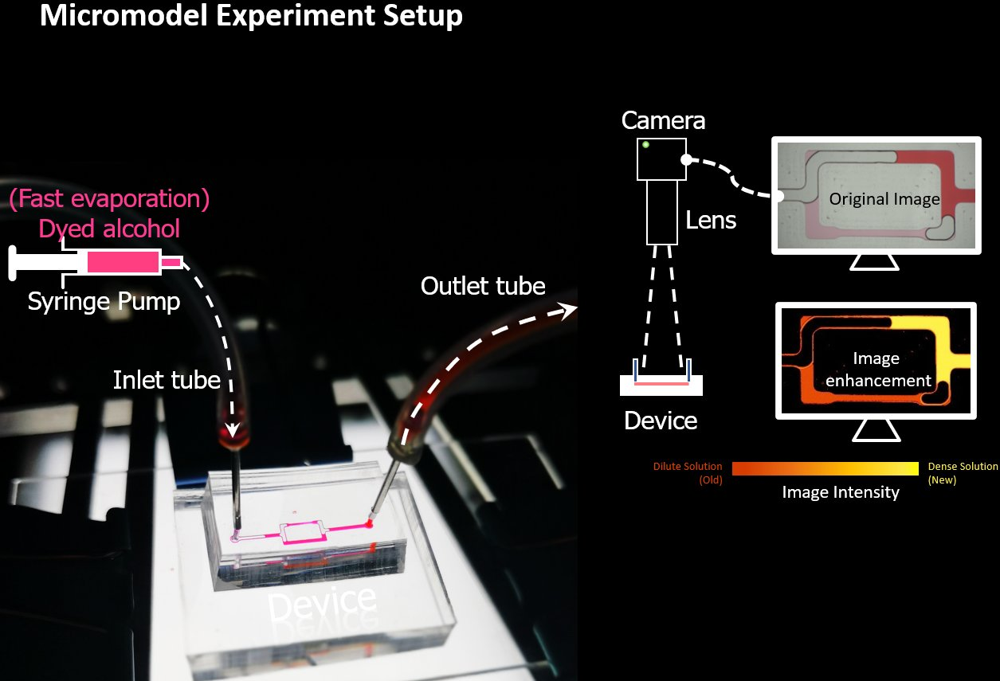
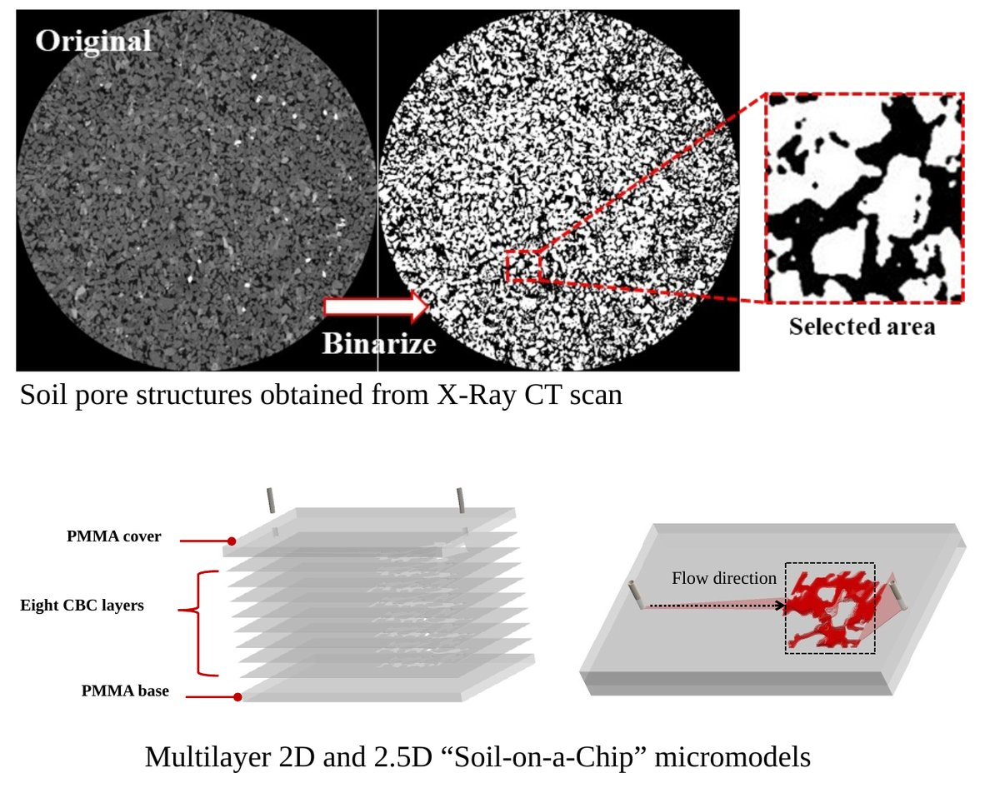
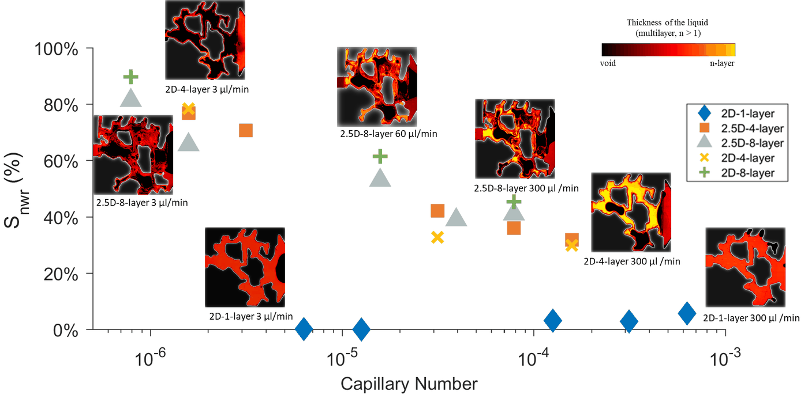
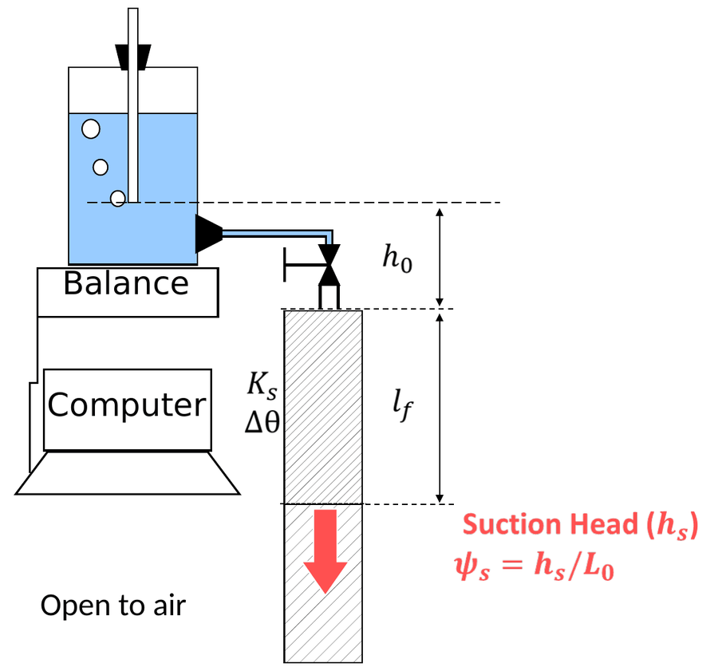
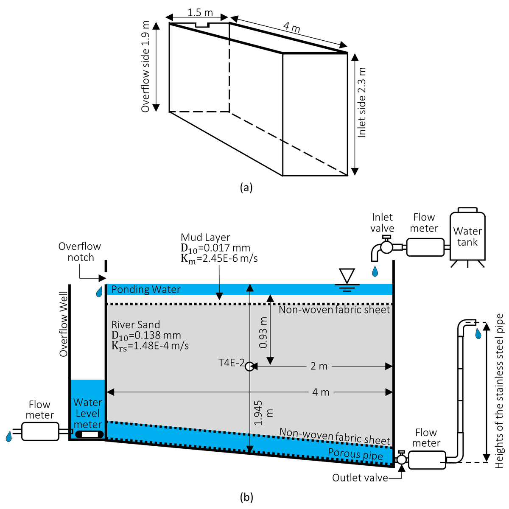
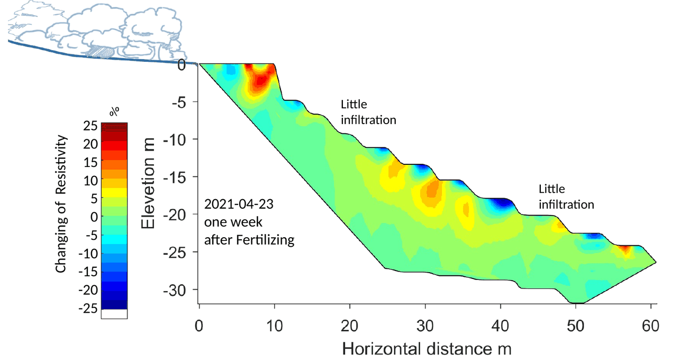
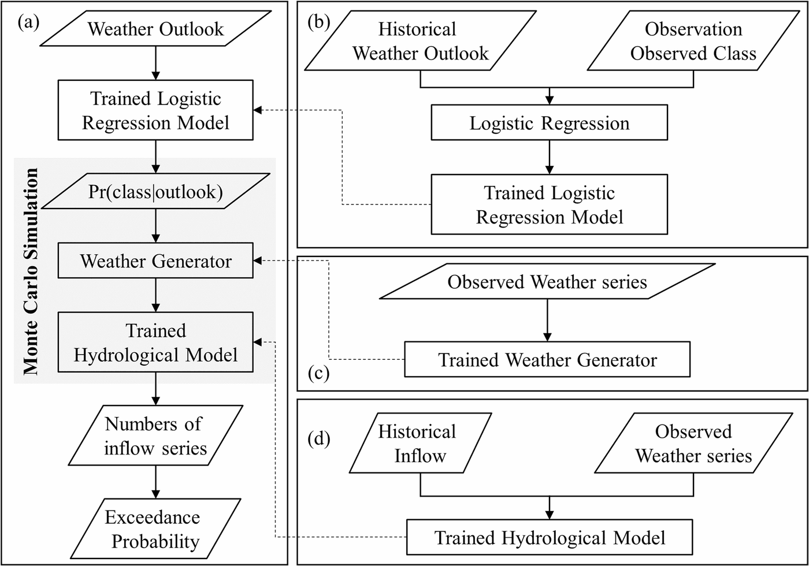
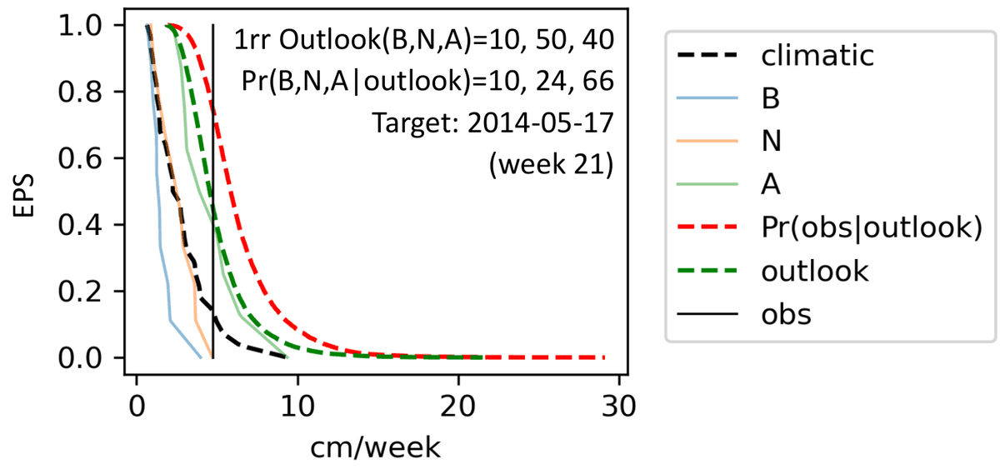
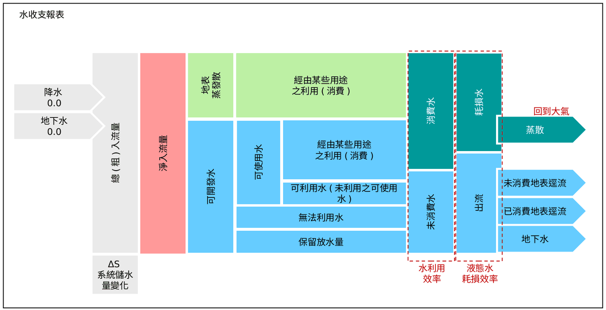

Research
Soil water dynamics at the Darcy and pore scales — and what they mean for water management.
1 · Old and new water in the pore space (dissertation)
Stable-isotope field studies suggest that water held in small pores ("old" water) can remain distinct from newly infiltrating water. I use transparent micromodels to observe directly how these waters interact.


Pore-doublet micromodels: evaporation and pre-event water entrapment
How evaporation before a wetting event controls pre-event water entrapment and pre-event/event water interaction. Dyed alcohol is injected into a pore-doublet device and imaged from above; image enhancement maps dilute (old) and dense (new) solution by intensity.
Huang et al. (2023), Advances in Water Resources · doi:10.1016/j.advwatres.2023.104464
Grain-based pattern micromodels: separation during wetting cycles
Tracking separation of old and new wetting liquids across repeated wetting cycles in realistic grain geometries.
Huang et al. (2024), International Agrophysics · doi:10.31545/intagr/194769




Related pore-scale work: soil-on-a-chip
Pore structures from X-ray CT scans of soil are binarized and fabricated as multilayer 2D and 2.5D “soil-on-a-chip” micromodels, providing direct evidence of how pore structure and channel aspect ratio control air entrapment during imbibition.
Also: direct numerical simulation of wetting–wetting displacement (Wang et al., 2023, Water); Euler characteristic during drying (Shih et al., 2021, Drying Technology).
Tsao et al. (2021), Lab on a Chip · doi:10.1039/D0LC01029D
2 · Infiltration and unsaturated-zone measurement


Ponding height and the Green–Ampt model
Investigating and parameterizing how ponding height affects dynamic suction-head estimation. The ponding depth h0 is held constant from a supply reservoir on a balance while the wetting front lf advances, so the suction head can be estimated from the measured infiltration.
Huang et al. (2023), Journal of Hydrology · doi:10.1016/j.jhydrol.2023.129524
Explicit approximations to the Green–Ampt model
A framework for comparing explicit approximation solutions by computational complexity and accuracy. The maximum absolute relative error (MARE) serves as a universal indicator, independent of infiltration duration and soil parameters, and the comparison extends to variable ponding and inclined soil columns.
Huang et al. (2026), Advances in Water Resources · doi:10.1016/j.advwatres.2026.105533


Lysimeter and in-situ measurement
Lysimeter experiments reveal soil–water interplay under controllable outdoor conditions, with instruments monitoring temperature, water content, electrical conductivity and pressure. Related work evaluates clogging evolution in a meso-scale lysimeter and the response time of tensiometers.
Lo et al. (2022), Land · doi:10.3390/land11091518 · Tsai et al. (2020), Journal of Hydrology · doi:10.1016/j.jhydrol.2019.124445
3 · Irrigation and water resources under climate change


Subsurface flow under terraced paddy fields
Electrical resistivity tomography and groundwater-level monitoring beneath an irrigated terraced paddy field in Northern Taiwan visualize the otherwise unseen movement of irrigation water in the subsurface.
Huang et al. (2024), Paddy and Water Environment · doi:10.1007/s10333-024-00979-5 · Interactive irrigation simulation




Streamflow exceedance probability from long-term weather outlooks
Logistic regression converts the categorical (below / near / above normal) long-term outlook into posterior class probabilities, which drive a weather generator and hydrological model in a Monte Carlo simulation of streamflow exceedance probability (EPS) — here for inflow to Shihmen Reservoir.
Huang et al. (2026), Terrestrial, Atmospheric and Oceanic Sciences · doi:10.1007/s44195-025-00120-x · Poster (PDF)


Water accounting for sustainable water management
Water accounting quantifies how water enters, leaves and is used in a system — whether by measurement, estimation or simulation — together with the information needed to interpret those numbers. Different statements and reporting frameworks serve different purposes, from remote-sensing-based basin accounting (WA+) to water-entitlement reporting under the Australian Water Accounting Standard; these studies apply the approach to water management in Taiwan.
劉哲佑等，《台灣水利》72(4) · doi:10.6937/TWC.202412_72(4).0002 · 黃群展等（2023），〈南勢溪跨域引水對翡翠水庫供水系統影響〉，《台灣水利》71(1) · doi:10.6937/TWC.202303_71(1).0006 · 林皓華等（2021），《中國土木水利工程學刊》 · doi:10.6652/JoCICHE.202105_33(3).0002